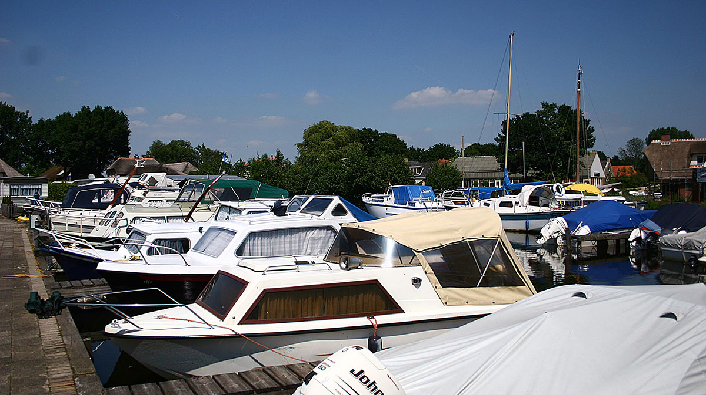

Marina Ligplaatsen
Ligplaatsen in de marina zijn alleen voor permanente jaarlijkse ligplaatsen. Ze zijn uitgerust met water, elektriciteit, douche en toilet. De maximale diepgang is +/- 1,00 m. De marina is direct gelegen aan het Belterwijde meer, van waaruit u in alle richtingen kunt varen.
Marina Diensten
Complete marina faciliteiten voor uw boot
Ligplaatsen
Veilige ligplaatsen voor boten tot 12 meter. Dagelijks en seizoensligplaatsen beschikbaar.
Onderhoud
Professioneel onderhoud en reparatie van alle boottypes. Winterstalling beschikbaar.
Faciliteiten
Sanitaire voorzieningen, douches, wasmachines en drogers voor gasten.
24/7 Service
Noodservice en assistentie beschikbaar. Beveiligde toegang tot de jachthaven.